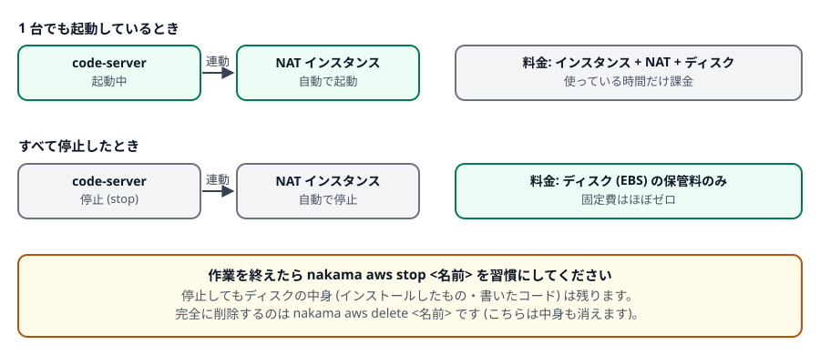

第 3 章 土台を用意する
開発環境を作る前に、その置き場所となるネットワークなどの共通部分を用意します。この作業は AWS アカウントに 1 回だけで、あとは何台作っても共有されます。
1. init で土台を作る
PowerShell で実行
nakama aws init数分かかります。次のものが作られます (すでにあるものは作り直さずそのまま使います)。
| 作られるもの | 役割 |
|---|---|
| VPC とサブネット | AWS の中に用意する専用のネットワーク区画。開発環境は外から直接触れない「プライベート」側に置かれます |
| インターネットゲートウェイとルートテーブル | 外向きの通信経路の設定 |
| NAT インスタンス | 開発環境が外部と通信する (ソフトのダウンロードなど) ための小さな中継サーバー |
| IAM ロールとインスタンスプロファイル | 開発環境が AWS の機能 (SSM 経由の接続など) を使うための権限 |
| WAF (Web ACL と IP セット) | 正面玄関の門番。許可した IP からのアクセスだけ通します |
| SSM パラメータ | 作ったリソースの ID などの控え (nakama が次回以降参照します) |
init は冪等です。すでに nakama が作ったリソースがあれば、それを再利用します。「途中で失敗した」「設定が合っているか不安」というときは、もう一度実行して構いません。
過去のバージョンの nakama が作った NAT ゲートウェイが残っている場合、init はそれを削除し、割り当てられていた固定 IP (Elastic IP) を解放します。これは、より安価な NAT インスタンスへ移行するためです。通信が途切れないように、先に新しい経路へ切り替えてから削除する順序で行われます。
初めて nakama を使う場合は、この動作は起こりません。
nakama は ap-northeast-1 (東京) を前提に作られています。他のリージョンを指定するオプションはありません。使う AZ (データセンターの区画) は ap-northeast-1a と ap-northeast-1c です。
2. 自分の IP を許可する
ブラウザで開発環境を開くには、あなたの接続元 IP アドレスを門番 (WAF) に登録します。登録していない IP からは、正面玄関で拒否されます (403 エラー)。
PowerShell で実行 (いまの接続元 IP を自動で調べて登録します)
nakama aws acl addIP を明示したい場合や、まとまった範囲を許可したい場合は引数で渡します。
nakama aws acl add 203.0.113.10 # 1 つの IP (自動で /32 が付きます)
nakama aws acl add 203.0.113.0/24 # 範囲で指定 (会社の出口が複数ある場合など)
nakama aws acl list # 登録済みの一覧
nakama aws acl delete 203.0.113.10/32 # 削除acl list は次のように表示されます。
CIDR ADDED_AT
203.0.113.10/32 2026-09-13T00:12:04Z自宅の回線は再接続で IP が変わることがあり、会社のネットワークは出口が複数あって日によって変わることもあります。「昨日は開けたのに今日は 403 になる」ときは、まず nakama aws acl add をもう一度実行してください。
使わなくなった IP は acl delete で消しておくと安全です。
connect / ssh / tunnel は SSM 経由なので、IP の許可は不要です (AWS の権限で守られます)。IP 許可が必要なのは nakama aws open でブラウザから開く場合だけです。第 5 章で詳しく扱います。
0.0.0.0/0 のような「どこからでも」に相当する範囲を登録すると、門番の意味がなくなります。開発環境にはパスワードもかかっていますが、許可 IP は必要最小限にしてください。
3. 料金の考え方
nakama が作るリソースには AWS の料金がかかります。金額はリージョンや使い方で変わるため、実際の見積もりは AWS 料金計算ツール や AWS コンソールの請求画面で確認してください。 ここでは「どこにお金がかかるか」の構造だけを説明します。
| 対象 | いつ課金されるか |
|---|---|
| 開発環境の EC2 インスタンス | 起動している時間だけ。停止すればかかりません |
| ディスク (EBS) | 作ってある間ずっと。停止中も保管料がかかります (中身を保つため) |
| NAT インスタンス | 開発環境が 1 台でも起動している時間だけ (自動で連動します) |
| CloudFront | 通信量とリクエスト数に応じて |
| WAF | Web ACL が存在する間、時間割りの基本料金 + リクエスト数 (AWS WAF の料金) |
| バックアップ (スナップショット) | 保管している容量に応じて。世代を増やすほど増えます |

- 作業が終わったら
nakama aws stop <名前>で止める (中身は残ります) - 使わない環境は
nakama aws delete <名前>で削除する (中身も消えるので、必要なものは先にバックアップか git へ) - バックアップの世代を
--keepで制限する (第 6 章) - 大きなインスタンスは必要なときだけにして、ふだんは小さいものに戻す (
nakama aws edit --instance-type)
すべて停止しても、ディスクの保管料と WAF の基本料金は残ります (どちらも小さな額ですが、ゼロではありません)。完全に課金を止めたい場合は、環境を delete し、土台も不要なら AWS コンソールから WAF の Web ACL などを削除してください。